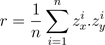

Medidas do corpo

Gráfico de Dispersão
Será que o número do calçado e a altura de uma pessoa são grandezas relacionadas? Quer dizer, será que pessoas mais altas têm maior ou menor número de calçado? Ou será que número de calçado não depende da altura da pessoa?
Uma medida resumo que permite mensurar essa dependência é o chamado "coeficiente de correlação linear", denotado por "r". Em uma amostra, ele é a média dos produtos zx.zy para os pontos da amostra:

Intuitivamente, quando a maioria dos pontos está no 1° ou no 3° quadrantes, r deve ser positivo, revelando uma associação positiva entre as variáveis, no sentido em que, à medida que uma delas assume valores maiores, a outra deve aumentar também. Se a maioria dos pontos estiver no 2° ou no 4° quadrantes, r deve ser negativo, indicando uma associação negativa entre as variáveis: à medida que uma delas assume valores maiores, a outra deve diminuir. Se não houver nenhuma tendência crescente nem decrescente, r deve ser próximo de zero, indicando que não há associação entre as variáveis.
No entanto, é importante ressaltar que a análise gráfica deve sempre ser a primeira a ser realizada, pela informação mais completa que ela apresenta. As medidas-resumo são apenas características numéricas que podem, eventualmente, não fornecer informação tão completa sobre a amostra quanto um bom gráfico é capaz de fazer.
Responder no caderno
-
Questão 1
-
A
O coeficiente de correlação da sua amostra é . Discuta, com base nesse valor e no gráfico ao lado, se existe alguma relação entre a altura e o tamanho do pé na sua amostra.
-
A